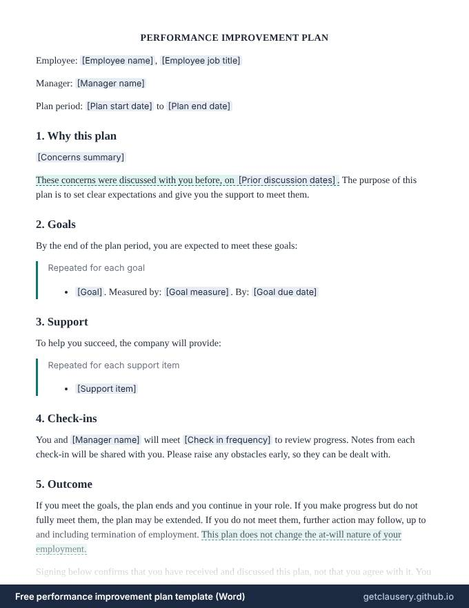

Free Performance improvement plan template — editable Word & PDF
A performance improvement plan that sets out the concerns, a list of measurable goals with due dates, the support the company will give, how often you will check in, what happens at the end of the plan, and an acknowledgement of receipt.

Free, with unlimited documents and no sign-up. Your answers stay in your browser. Who it is for: Managers and HR teams who need to address underperformance fairly and keep a clear record of expectations and support.
Reviewed by Clausery editors · Updated · Word (.docx) · Free to use and adapt
Need more than one? Download all 87 templates as one .zip file.
What is in the performance improvement plan#
- Employee, manager and plan period
- The performance concerns and earlier discussions
- Goals, each with a measure and due date
- Support the company will provide
- Check-in schedule
- Possible outcomes, with an optional at-will statement
- Acknowledgement of receipt and time to comment
Read the full template#
This is the complete wording. [Labels] are filled in from your answers, and highlighted text only appears when it applies; hover over it to see when.
PERFORMANCE IMPROVEMENT PLAN
Employee: [Employee name], [Employee job title]
Manager: [Manager name]
Plan period: [Plan start date] to [Plan end date]
1. Why this plan
[Concerns summary]
These concerns were discussed with you before, on [Prior discussion dates]. The purpose of this plan is to set clear expectations and give you the support to meet them.
2. Goals
By the end of the plan period, you are expected to meet these goals:
Repeated for each goal
- [Goal]. Measured by: [Goal measure]. By: [Goal due date]
3. Support
To help you succeed, the company will provide:
Repeated for each support item
- [Support item]
4. Check-ins
You and [Manager name] will meet [Check in frequency] to review progress. Notes from each check-in will be shared with you. Please raise any obstacles early, so they can be dealt with.
5. Outcome
If you meet the goals, the plan ends and you continue in your role. If you make progress but do not fully meet them, the plan may be extended. If you do not meet them, further action may follow, up to and including termination of employment. This plan does not change the at-will nature of your employment.
Signing below confirms that you have received and discussed this plan, not that you agree with it. You may add written comments within [Comment days] days.
Employee: ____________________________ Date: ______________
Manager: ____________________________ Date: ______________
The questions you answer#
Clausery turns the template into a short questionnaire. Optional parts only appear when they apply.
| Question | Type | Asked when |
|---|---|---|
| Employee name | Short text | Always |
| Employee job title | Short text | Always |
| Manager name | Short text | Always |
| Plan start date | Date | Always |
| Plan end date | Date | Always |
| Concerns summary | Long text | Always |
| Has prior discussions | Yes / no | Always |
| Prior discussion dates | Short text | If “Has prior discussions” is yes |
| Goals For each item: Goal, Goal measure, Goal due date | Repeating group | Always |
| Support items For each item: Support item | Repeating group | Always |
| Check in frequency | Short text | Always |
| Is at will | Yes / no | Always |
| Comment days | Number | Always |
Prefer to start from your own wording? Download the Word file, edit it, keep the {tags}, and upload it to Clausery. See the template syntax.
Questions
What is a performance improvement plan?
A written plan that tells an employee what is not working, what good performance looks like, the support they will get, and by when they need to improve.
How long should a PIP last?
Typically 30, 60 or 90 days: long enough to show real improvement against the goals, with regular check-ins along the way.
Does signing a PIP mean the employee agrees with it?
Not in this template. The signature confirms the employee received and discussed the plan, and they can add written comments.
What to include: Performance improvement plan template guide — clauses, step-by-step how-to and FAQ.
Guide: Performance Improvement Plan (PIP) That Works
Free tool: Deadline calculator: the end of a 30, 60 or 90 day plan
Related templates
Browse all 87 free templates by category
This template is a general sample and not legal advice. Laws vary by jurisdiction; have it reviewed before use.
Helpful?